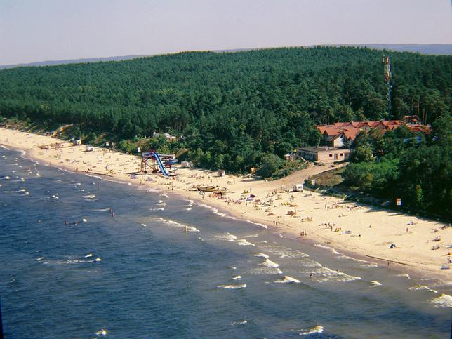
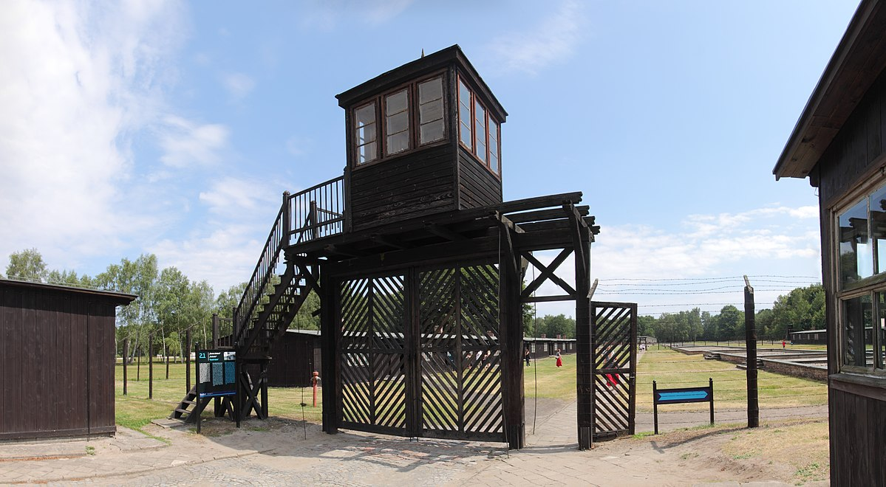
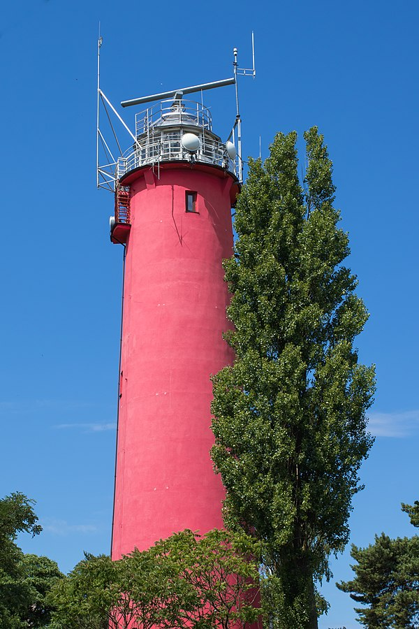

Dane o powiecie
| Siedziba | Nowy Dwór Gdański |
| Powierzchnia | 671,53 km² |
| Populacja | 36 107 |
Dane kontaktowe starostwa powiatowego
| Telefon | +48 55 247 36 71 |
| Adres | ul. Sikorskiego 23 82-100 Nowy Dwór Gdański |
| Strona | bip.nowydworgdanski.pl |
Atrakcje turystyczne
Mierzeja Wiślana
Mierzeja Wiślana jest piaszczystym wałem rozciągającym się na południowo-wschodnim brzegu Zatoki Gdańskiej. Mierzeja, złożona niegdyś z kilkunastu wysp, oddziela Zalew Wiślany od otwartych wód Bałtyku. Jedynie zachodnia część mierzei należy do Polski. Jej wschodni kraniec to już terytorium Federacji Rosyjskiej, a dokładnie miasta Bałtijsk. Obszar ten jest objęty od 1985 roku szczególną ochroną. Dramatyczna sytuacja, spowodowana rabunkowym wyrębem lasu, skłoniła władze do utworzenia na tym terenie parku krajobrazowego. Dziś lasy, głównie sosnowe, w 70 proc. pokrywają obszar parku. Nic więc dziwnego, że to od lat jedno z ulubionych miejsc spędzania letnich wakacji. Poznaj największe atrakcje tego zakątka Polski!
Źródło: turystyka.wp.plMuzeum Stutthof w Sztutowie
Muzeum jest zorganizowane na części dawnego obozu (ok. 20 ha). Wśród najważniejszych jego zabytków jest częściowo zachowany Stary Obóz, komora gazowa, komendantura wraz z garażami, przestrzeń ogrodów warzywnych i szklarni. Teren miejsca pamięci obejmuje także rekonstrukcję krematoriów, puste już dziś pola tzw. Nowego Obozu i Obozu Żydowskiego, a także pomnik monumentalny autorstwa Wiktora Tołkina. Szczególnie bogate są zgromadzone i przechowywane archiwa poobozowe. Na terenie Muzeum zainstalowana jest stała wystawa główna. Są też organizowane wystawy czasowe.
Źródło: wikipedia.orgLatarnia Morska Krynica Morska
Latarnia morska w Krynicy to jedyny taki obiekt na Mierzei Wiślanej. Pierwszą latarnię morską wybudowano tutaj pod koniec XIX stulecia. Jak wtedy wyglądała możemy niestety zobaczyć tylko na przedwojennych zdjęciach i pocztówkach, albowiem latarnia pod koniec II Wojny Światowej została zburzona. Obecną latarnię w Krynicy pobudowano w 1951 roku z betonowych bloków.
Źródło: krynica.info.pl